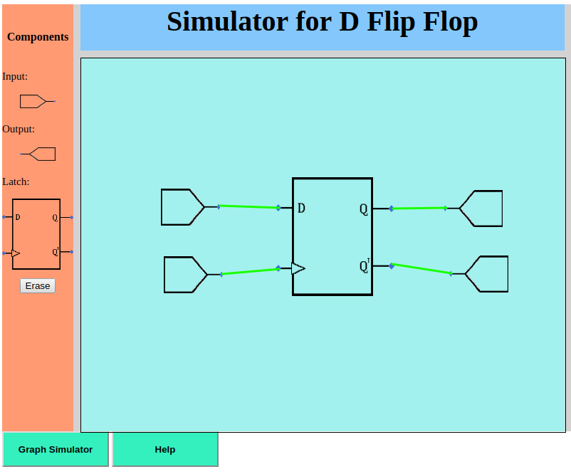

Take the components from the left and arrange them accordingly on the blank space on the left.
Once the components are arranged, wires can be drawn by clicking two points on the space.
Here is how it looks:

After this is done you can click on the graph simulator to see how the graph works.